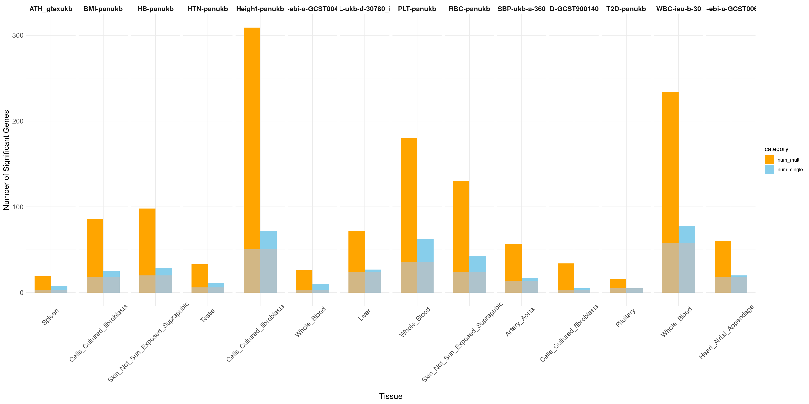

Downstream analysis for multi-group analysis
XSun
2025-01-07
Last updated: 2025-01-10
Checks: 6 1
Knit directory: multigroup_ctwas_analysis/
This reproducible R Markdown analysis was created with workflowr (version 1.7.0). The Checks tab describes the reproducibility checks that were applied when the results were created. The Past versions tab lists the development history.
The R Markdown is untracked by Git. To know which version of the R
Markdown file created these results, you’ll want to first commit it to
the Git repo. If you’re still working on the analysis, you can ignore
this warning. When you’re finished, you can run
wflow_publish to commit the R Markdown file and build the
HTML.
Great job! The global environment was empty. Objects defined in the global environment can affect the analysis in your R Markdown file in unknown ways. For reproduciblity it’s best to always run the code in an empty environment.
The command set.seed(20231112) was run prior to running
the code in the R Markdown file. Setting a seed ensures that any results
that rely on randomness, e.g. subsampling or permutations, are
reproducible.
Great job! Recording the operating system, R version, and package versions is critical for reproducibility.
Nice! There were no cached chunks for this analysis, so you can be confident that you successfully produced the results during this run.
Great job! Using relative paths to the files within your workflowr project makes it easier to run your code on other machines.
Great! You are using Git for version control. Tracking code development and connecting the code version to the results is critical for reproducibility.
The results in this page were generated with repository version 1ddb625. See the Past versions tab to see a history of the changes made to the R Markdown and HTML files.
Note that you need to be careful to ensure that all relevant files for
the analysis have been committed to Git prior to generating the results
(you can use wflow_publish or
wflow_git_commit). workflowr only checks the R Markdown
file, but you know if there are other scripts or data files that it
depends on. Below is the status of the Git repository when the results
were generated:
Ignored files:
Ignored: .Rhistory
Untracked files:
Untracked: analysis/LDL_silver_standard.Rmd
Untracked: analysis/multi_group_downstream_analysis.Rmd
Note that any generated files, e.g. HTML, png, CSS, etc., are not included in this status report because it is ok for generated content to have uncommitted changes.
There are no past versions. Publish this analysis with
wflow_publish() to start tracking its development.
library(ctwas)
library(ggplot2)
library(dplyr)
library(tidyr)
library(gridExtra)
library(pheatmap)
library(VennDiagram)
source("/project/xinhe/xsun/multi_group_ctwas/data/selected_tissues.R")
source("/project/xinhe/xsun/multi_group_ctwas/data/samplesize.R")
traits <- names(tissues_alltraits)
traits <- traits[order(traits)]
brain_traits <- c("ASD-ieu-a-1185","BIP-ieu-b-5110","MDD-ieu-b-102","NS-ukb-a-230","PD-ieu-b-7","SCZ-ieu-b-5102")
create_bubble_plot <- function(trait, param, gwas_n, tissue_order) {
ctwas_parameters <- summarize_param(param, gwas_n)
# Extract and process PVE data
prop_pve <- ctwas_parameters$prop_heritability
prop_pve_df <- data.frame(
Tissue = sapply(strsplit(names(prop_pve), "\\|"), `[`, 1),
QTL = sapply(strsplit(names(prop_pve), "\\|"), `[`, 2),
Value = prop_pve
)
prop_pve_matrix <- as.data.frame(pivot_wider(prop_pve_df, names_from = QTL, values_from = Value))
prop_pve_matrix <- prop_pve_matrix[-which(prop_pve_matrix$Tissue == "SNP"),]
prop_pve_matrix <- prop_pve_matrix[,-which(colnames(prop_pve_matrix) == "NA")]
# Extract and process enrichment data
enrich <- ctwas_parameters$enrichment
enrich_df <- data.frame(
Tissue = sapply(strsplit(names(enrich), "\\|"), `[`, 1),
QTL = sapply(strsplit(names(enrich), "\\|"), `[`, 2),
Value = enrich
)
enrich_matrix <- as.data.frame(pivot_wider(enrich_df, names_from = QTL, values_from = Value))
# Convert matrices to long format and merge
pve_long <- prop_pve_matrix %>%
pivot_longer(cols = -Tissue, names_to = "Trait", values_to = "prop_PVE")
enrich_long <- enrich_matrix %>%
pivot_longer(cols = -Tissue, names_to = "Trait", values_to = "Enrichment")
plot_data <- left_join(pve_long, enrich_long, by = c("Tissue", "Trait"))
plot_data$Tissue <- gsub(pattern = "_", replacement = " ", x = plot_data$Tissue)
plot_data <- plot_data %>%
mutate(prop_PVE = prop_PVE * 100)
#plot_data$Tissue <- factor(plot_data$Tissue, levels = unique(plot_data$Tissue))
plot_data$Tissue <- factor(plot_data$Tissue, levels = rev(unique(plot_data$Tissue)))
# Create the bubble plot
p <- ggplot(plot_data, aes(x = Trait, y = Tissue, size = prop_PVE, color = Enrichment)) +
geom_point(alpha = 0.7) +
scale_size(range = c(1, 20), name = "Percentage of Heritability (%)") +
scale_color_gradient(low = "lightblue", high = "darkblue", name = "Enrichment") +
labs(x = "Modalities", y = "Tissues") +
guides(size = guide_legend(override.aes = list(color = "lightblue"))) +
ggtitle(trait) +
theme_minimal() +
theme(
axis.text.x = element_text(size = 16, angle = 45, hjust = 1),
axis.text.y = element_text(size = 16),
axis.title.x = element_text(size = 16),
axis.title.y = element_text(size = 16),
legend.text = element_text(size = 16),
legend.title = element_text(size = 18)
)
return(p)
}
plot_heatmap_bytissue <- function(heatmap_data, main, tissues) {
rownames(heatmap_data) <- heatmap_data$gene_name
heatmap_data <- heatmap_data %>% dplyr::select(-gene_name, -combined_pip)
pip_types <- c("|eQTL_pip", "|sQTL_pip", "|stQTL_pip")
combinations <- expand.grid(pip_types, tissues)
order <- paste0(combinations$Var2, combinations$Var1)
heatmap_data <- heatmap_data[,order]
if(nrow(heatmap_data) ==1){
heatmap_data <- rbind(heatmap_data,rep(0,ncol(heatmap_data)))
rownames(heatmap_data)[2] <- "fake_gene_for_plotting"
}
heatmap_matrix <- as.matrix(heatmap_data)
p <- pheatmap(heatmap_matrix,
cluster_rows = F, # Cluster the rows (genes)
cluster_cols = F, # Cluster the columns (QTL types)
color = colorRampPalette(c("white", "red"))(50), # Color gradient
display_numbers = TRUE, # Display numbers in cells
main = main,labels_row = rownames(heatmap_data), silent = T)
return(p)
}
plot_heatmap_byomics <- function(heatmap_data, main) {
rownames(heatmap_data) <- heatmap_data$gene_name
heatmap_data <- heatmap_data %>% dplyr::select(-gene_name, -combined_pip)
if(nrow(heatmap_data) ==1){
heatmap_data <- rbind(heatmap_data,rep(0,ncol(heatmap_data)))
rownames(heatmap_data)[2] <- "fake_gene_for_plotting"
}
heatmap_matrix <- as.matrix(heatmap_data)
p <- pheatmap(heatmap_matrix,
cluster_rows = F, # Cluster the rows (genes)
cluster_cols = F, # Cluster the columns (QTL types)
color = colorRampPalette(c("white", "red"))(50), # Color gradient
display_numbers = TRUE, # Display numbers in cells
main = main,labels_row = rownames(heatmap_data), silent = T)
return(p)
}Genetic architecture of complex traits
Bubble plot: h2g partition across tissues and omics
Tissue order is from: https://sq-96.github.io/multigroup_ctwas_analysis/GWAS_tissue_selection.html
folder_results <- "/project/xinhe/shengqian/ctwas_GWAS_analysis/results/"
p <- list()
for(trait in traits[!traits %in% brain_traits]){
param <- readRDS(paste0(folder_results, "/", trait, "/", trait, ".param.RDS"))
gwas_n <- samplesize[trait]
tissue_order <- tissues_alltraits[[trait]]
p[[length(p)+1]] <- create_bubble_plot(trait = trait,param = param,gwas_n = gwas_n, tissue_order = tissue_order)
}
print("Non-psychiatric")[1] "Non-psychiatric"grid.arrange(grobs = p, ncol = 3, nrow = 5)
folder_results <- "/project/xinhe/shengqian/ctwas_GWAS_analysis/results/"
p <- list()
for(trait in brain_traits){
param <- readRDS(paste0(folder_results, "/", trait, "/", trait, ".param.RDS"))
gwas_n <- samplesize[trait]
tissue_order <- tissues_alltraits[[trait]]
p[[length(p)+1]] <- create_bubble_plot(trait = trait,param = param,gwas_n = gwas_n, tissue_order = tissue_order)
}
print("psychiatric")[1] "psychiatric"grid.arrange(grobs = p, ncol = 3, nrow = 2)The power of gene discovery
load("/project/xinhe/xsun/multi_group_ctwas/13.post_processing_0103/results_downstream/compare_multi_single_genenum.rdata")
sum <- sum[!sum$trait %in% brain_traits,]
sum$num_multi <- as.numeric(sum$num_multi)
sum$num_single <- as.numeric(sum$num_single)
sum$overlap <- as.numeric(sum$overlap)
#sum$overlap_adj <- as.numeric(sum$overlap) * 1.001 # Adjust the value to slightly offset behind the main bars
data_long <- pivot_longer(sum, cols = c(num_single, num_multi), names_to = "category", values_to = "count")
print("Non-psychiatric")[1] "Non-psychiatric"# Facet by trait, with tissues as the bars
ggplot(data_long, aes(x = tissue_single, y = count, fill = category)) +
geom_bar(stat = "identity", position = position_dodge(width = 0.8), width = 0.8) +
geom_bar(data = sum, aes(x = tissue_single, y = overlap), stat = "identity", position = position_dodge(width = 0.8), fill = "grey", alpha = 0.7, width = 0.8) +
facet_wrap(~ trait, nrow = 1, scales = "free_x") + # Display all facets in one row with free scales on x
labs(x = "Tissue", y = "Number of Significant Genes") +
scale_fill_manual(values = c("num_single" = "skyblue", "num_multi" = "orange")) +
theme_minimal() +
theme(axis.text.x = element_text(size = 12, angle = 45, vjust = 0.7, hjust = 0.6), # Adjusted hjust here
axis.text.y = element_text(size = 12),
axis.title.x = element_text(size = 14),
axis.title.y = element_text(size = 14),
strip.background = element_blank(),
strip.text.x = element_text(size = 12, face = "bold"))load("/project/xinhe/xsun/multi_group_ctwas/13.post_processing_0103/results_downstream/compare_multi_single_genenum.rdata")
sum <- sum[sum$trait %in% brain_traits,]
sum$num_multi <- as.numeric(sum$num_multi)
sum$num_single <- as.numeric(sum$num_single)
sum$overlap <- as.numeric(sum$overlap)
#sum$overlap_adj <- as.numeric(sum$overlap) * 1.001 # Adjust the value to slightly offset behind the main bars
data_long <- pivot_longer(sum, cols = c(num_single, num_multi), names_to = "category", values_to = "count")
print("psychiatric")[1] "psychiatric"# Facet by trait, with tissues as the bars
ggplot(data_long, aes(x = tissue_single, y = count, fill = category)) +
geom_bar(stat = "identity", position = position_dodge(width = 0.8), width = 0.8) +
geom_bar(data = sum, aes(x = tissue_single, y = overlap), stat = "identity", position = position_dodge(width = 0.8), fill = "grey", alpha = 0.7, width = 0.8) +
facet_wrap(~ trait, nrow = 1, scales = "free_x") + # Display all facets in one row with free scales on x
labs(x = "Tissue", y = "Number of Significant Genes") +
scale_fill_manual(values = c("num_single" = "skyblue", "num_multi" = "orange")) +
theme_minimal() +
theme(axis.text.x = element_text(size = 12, angle = 45, vjust = 0.7, hjust = 0.6), # Adjusted hjust here
axis.text.y = element_text(size = 12),
axis.title.x = element_text(size = 14),
axis.title.y = element_text(size = 14),
strip.background = element_blank(),
strip.text.x = element_text(size = 12, face = "bold"))
Highlight the causal context and modality
For all: https://drive.google.com/drive/folders/1COItzR1y_Em6UXb_J8XCzqP-PuXIth6J?usp=share_link
MDD-ieu-b-102
trait <- "MDD-ieu-b-102"
combined_pip_multi <- readRDS(paste0("/project/xinhe/shengqian/ctwas_GWAS_analysis/results/",trait,"/",trait,".combined_pip_bygroup_final.RDS"))
combined_pip_sig_multi <- combined_pip_multi[combined_pip_multi$combined_pip > 0.8,]
# plot_heatmap_bytissue(heatmap_data = combined_pip_sig_multi, main = "PIP partition for genes with PIP > 0.8 from multi-group analysis",tissues = tissues_alltraits[[trait]])plot_heatmap_byomics(heatmap_data = combined_pip_sig_multi, main = "PIP partition for genes with PIP > 0.8 from multi-group analysis")Explore allelic heterogeneity (AH)
load("/project/xinhe/xsun/multi_group_ctwas/13.post_processing_0103/results_downstream/pip_per_cs_alltraits.rdata")
DT::datatable(pip_per_cs_alltraits,caption = htmltools::tags$caption( style = 'caption-side: left; text-align: left; color:black; font-size:150% ;','PIP per CS, for genes with AH'),options = list(pageLength = 10) )Reduce FP findings
Silver standard for LDL
https://sq-96.github.io/multigroup_ctwas_analysis/LDL_silver_standard.html
Enrichment analysis – fractional model
Methods for enrichment analsis can be found here: https://sq-96.github.io/multigroup_ctwas_analysis/multi_group_6traits_15weights_ess_enrichment_genesymbol.html#Fractional_model
LDL-ukb-d-30780_irnt
trait <- "LDL-ukb-d-30780_irnt"
db <- "GO_Biological_Process_2023"
enrich_multi <- readRDS(paste0("/project/xinhe/xsun/multi_group_ctwas/13.post_processing_0103/results_downstream/enrich_fractional/enrichment_fractional_calibrated_blgeneset_summary_multigroup_", trait, "_", db, ".RDS"))
enrich_single <- readRDS(paste0("/project/xinhe/xsun/multi_group_ctwas/13.post_processing_0103/results_downstream/enrich_fractional/enrichment_fractional_calibrated_blgeneset_summary_singlegroup_", trait, "_", db, ".RDS"))
print("FDR_adjust < 0.05")[1] "FDR_adjust < 0.05"enrich_multi_sig <- enrich_multi[enrich_multi$fdr_calibrated < 0.05,]
enrich_single_sig <- enrich_multi[enrich_single$fdr_calibrated < 0.05,]
venn.plot <- draw.pairwise.venn(
area1 = nrow(enrich_multi_sig), # Size of Group A
area2 = nrow(enrich_single_sig), # Size of Group B
cross.area = sum(enrich_multi_sig$GO %in% enrich_single_sig$GO), # Overlap between Group A and Group B
category = c("Multigroup", "Singlegroup"), # Labels for the groups
fill = c("red", "blue"), # Colors for the groups
lty = "blank", # Line type for the circles
cex = 2, # Font size for the numbers
cat.cex = 2 # Font size for the labels
)enrich_multi_unique <- enrich_multi_sig[!enrich_multi_sig$GO %in% enrich_single_sig$GO,]
DT::datatable(enrich_multi_unique,caption = htmltools::tags$caption( style = 'caption-side: left; text-align: left; color:black; font-size:150% ;','Enrichment results -- unique GO terms found by multi-group analysis'),options = list(pageLength = 10) )# enrich_single_unique <- enrich_single_sig[!enrich_single_sig$GO %in% enrich_multi_sig$GO,]
# DT::datatable(enrich_single_unique,caption = htmltools::tags$caption( style = 'caption-side: left; text-align: left; color:black; font-size:150% ;','Enrichment results -- unique GO terms found by single-group analysis, FDR < 0.05'),options = list(pageLength = 10) )print("FDR_adjust < 0.1")[1] "FDR_adjust < 0.1"enrich_multi_sig <- enrich_multi[enrich_multi$fdr_calibrated < 0.1,]
enrich_single_sig <- enrich_multi[enrich_single$fdr_calibrated < 0.1,]
venn.plot <- draw.pairwise.venn(
area1 = nrow(enrich_multi_sig), # Size of Group A
area2 = nrow(enrich_single_sig), # Size of Group B
cross.area = sum(enrich_multi_sig$GO %in% enrich_single_sig$GO), # Overlap between Group A and Group B
category = c("Multigroup", "Singlegroup"), # Labels for the groups
fill = c("red", "blue"), # Colors for the groups
lty = "blank", # Line type for the circles
cex = 2, # Font size for the numbers
cat.cex = 2 # Font size for the labels
)enrich_multi_unique <- enrich_multi_sig[!enrich_multi_sig$GO %in% enrich_single_sig$GO,]
DT::datatable(enrich_multi_unique,caption = htmltools::tags$caption( style = 'caption-side: left; text-align: left; color:black; font-size:150% ;','Enrichment results -- unique GO terms found by multi-group analysis'),options = list(pageLength = 10) )# enrich_single_unique <- enrich_single_sig[!enrich_single_sig$GO %in% enrich_multi_sig$GO,]
# DT::datatable(enrich_single_unique,caption = htmltools::tags$caption( style = 'caption-side: left; text-align: left; color:black; font-size:150% ;','Enrichment results -- unique GO terms found by single-group analysis, FDR < 0.1'),options = list(pageLength = 10) )
sessionInfo()R version 4.2.0 (2022-04-22)
Platform: x86_64-pc-linux-gnu (64-bit)
Running under: CentOS Linux 7 (Core)
Matrix products: default
BLAS/LAPACK: /software/openblas-0.3.13-el7-x86_64/lib/libopenblas_haswellp-r0.3.13.so
locale:
[1] C
attached base packages:
[1] grid stats graphics grDevices utils datasets methods
[8] base
other attached packages:
[1] VennDiagram_1.7.3 futile.logger_1.4.3 pheatmap_1.0.12
[4] gridExtra_2.3 tidyr_1.3.0 dplyr_1.1.4
[7] ggplot2_3.5.1 ctwas_0.4.20.9001
loaded via a namespace (and not attached):
[1] colorspace_2.0-3 rjson_0.2.21
[3] ellipsis_0.3.2 rprojroot_2.0.3
[5] XVector_0.36.0 locuszoomr_0.2.1
[7] GenomicRanges_1.48.0 fs_1.5.2
[9] rstudioapi_0.13 farver_2.1.0
[11] DT_0.22 ggrepel_0.9.1
[13] bit64_4.0.5 AnnotationDbi_1.58.0
[15] fansi_1.0.3 xml2_1.3.3
[17] codetools_0.2-18 logging_0.10-108
[19] cachem_1.0.6 knitr_1.39
[21] jsonlite_1.8.0 workflowr_1.7.0
[23] Rsamtools_2.12.0 dbplyr_2.1.1
[25] png_0.1-7 readr_2.1.2
[27] compiler_4.2.0 httr_1.4.3
[29] assertthat_0.2.1 Matrix_1.5-3
[31] fastmap_1.1.0 lazyeval_0.2.2
[33] cli_3.6.1 formatR_1.12
[35] later_1.3.0 htmltools_0.5.2
[37] prettyunits_1.1.1 tools_4.2.0
[39] gtable_0.3.0 glue_1.6.2
[41] GenomeInfoDbData_1.2.8 rappdirs_0.3.3
[43] Rcpp_1.0.12 Biobase_2.56.0
[45] jquerylib_0.1.4 vctrs_0.6.5
[47] Biostrings_2.64.0 rtracklayer_1.56.0
[49] crosstalk_1.2.0 xfun_0.41
[51] stringr_1.5.1 lifecycle_1.0.4
[53] irlba_2.3.5 restfulr_0.0.14
[55] ensembldb_2.20.2 XML_3.99-0.14
[57] zlibbioc_1.42.0 zoo_1.8-10
[59] scales_1.3.0 gggrid_0.2-0
[61] hms_1.1.1 promises_1.2.0.1
[63] MatrixGenerics_1.8.0 ProtGenerics_1.28.0
[65] parallel_4.2.0 SummarizedExperiment_1.26.1
[67] lambda.r_1.2.4 RColorBrewer_1.1-3
[69] AnnotationFilter_1.20.0 LDlinkR_1.2.3
[71] yaml_2.3.5 curl_4.3.2
[73] memoise_2.0.1 sass_0.4.1
[75] biomaRt_2.54.1 stringi_1.7.6
[77] RSQLite_2.3.1 highr_0.9
[79] S4Vectors_0.34.0 BiocIO_1.6.0
[81] GenomicFeatures_1.48.3 BiocGenerics_0.42.0
[83] filelock_1.0.2 BiocParallel_1.30.3
[85] GenomeInfoDb_1.39.9 rlang_1.1.2
[87] pkgconfig_2.0.3 matrixStats_0.62.0
[89] bitops_1.0-7 evaluate_0.15
[91] lattice_0.20-45 purrr_1.0.2
[93] labeling_0.4.2 GenomicAlignments_1.32.0
[95] htmlwidgets_1.5.4 cowplot_1.1.1
[97] bit_4.0.4 tidyselect_1.2.0
[99] magrittr_2.0.3 R6_2.5.1
[101] IRanges_2.30.0 generics_0.1.2
[103] DelayedArray_0.22.0 DBI_1.2.2
[105] pgenlibr_0.3.3 pillar_1.9.0
[107] withr_2.5.0 KEGGREST_1.36.3
[109] RCurl_1.98-1.7 mixsqp_0.3-43
[111] tibble_3.2.1 crayon_1.5.1
[113] futile.options_1.0.1 utf8_1.2.2
[115] BiocFileCache_2.4.0 plotly_4.10.0
[117] tzdb_0.4.0 rmarkdown_2.25
[119] progress_1.2.2 data.table_1.14.2
[121] blob_1.2.3 git2r_0.30.1
[123] digest_0.6.29 httpuv_1.6.5
[125] stats4_4.2.0 munsell_0.5.0
[127] viridisLite_0.4.0 bslib_0.3.1